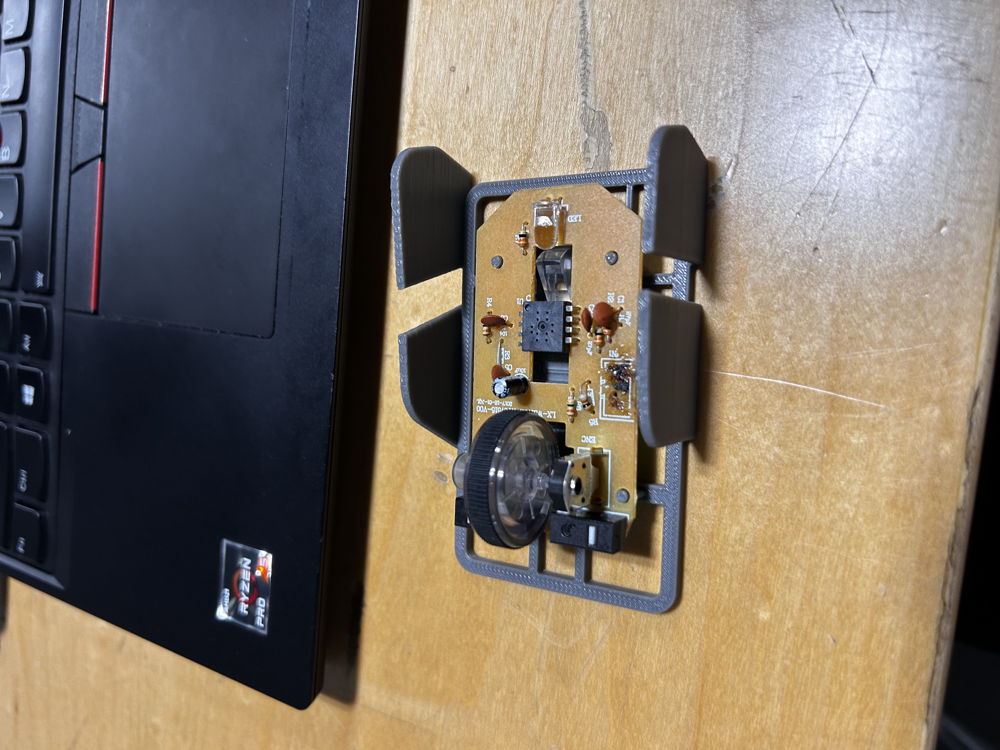
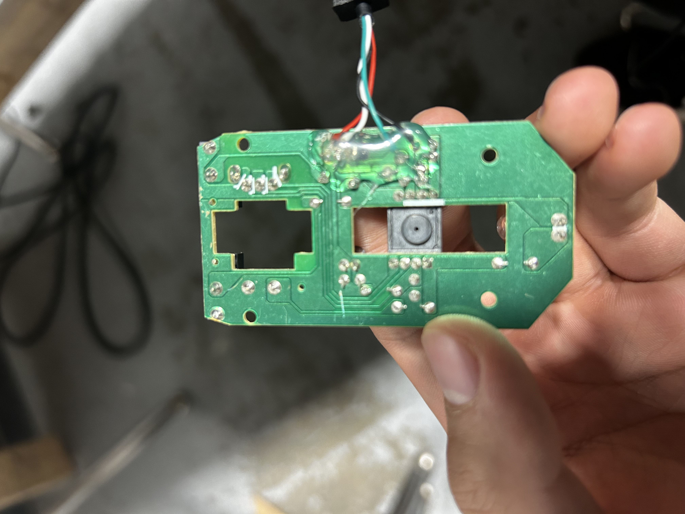

soph week 5/5 - 5/9
had to restart because of an error i made a while ago that i should’ve noticed and addressed earlier…. whoops.
slow week because of ap tests, health, and a half day from monday - wednesday, but whatever.
restarting! (so fun!)
so. i never decided to test my shells with the scroll wheel for some reason, but i eventually decided to, just to realize that i made a major mistake.
as seen in the image above, the scroll wheel rests around the center of the mouse, not near the front where i intended. this is because due to the mouse triggers i was using, i had to move the pcb location a bit back to be able to click the button, but as a result, the scroll wheel moved back a lot.
as a result, i’m going to have to change up the design of the mouse buttons, ultimately causing me to change my frame as well.
pcb stuff
miles decided to fix my pcb thankfully, and now it works again
some of the wires did have to be solder somewhere else as i burnt the traces, and superglue was used to hold the wires together.
with this updated fix, despite having a faulty shell, i was able to test some other concerns i had
video showcasing the working pcb
as shown in the video, the problem a addressed a month ago(?) was in fact a problem here. the stands for the pcb were slightly too tall to the point where the led was unable to hit the sensor block. to counteract this, on my next model i will have to decrease the length of the stands.
additionally, i tested the mouse buttons on the pcb to ensure that everything else was working correctly. additionally, i put the sensor block and pcb into the original shell to make sure the sensor was in fact working, and it was the stand height that was the problem.
triggers
since i have to restart my shell and my mouse triggers, i decided that it would be better to design around the mouse triggers using a different design that hopefully wouldn’t push my pcb back so far.
since the model i was using had the mechanism for pushing the buttons so far back, i figured i’d have to create my own trigger while somehow keeping the geometry of the original as close as possible.
i did have some problems copyying the shape, especially on the sides as they were both different.
left side looks really weird, so i’m gonna have to fix that side and somehow adjust the mechanism for clicking the button to be closer to the front of the trigger.